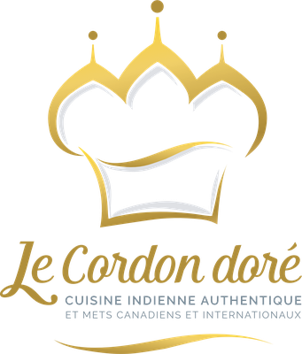

58, rue Principale, Gatineau (Vieux-Aylmer) · Par Jonathan Pankratz (Jopism) · Novembre 2026
Démonstration en Ligne
lecordondore.jopism.comVotre cuisine soignée, votre chef formé à Paris et votre buffet du mardi méritent un site qui donne envie de réserver en quelques secondes. J’ai préparé une démonstration fonctionnelle que vous pouvez essayer dès maintenant sur votre téléphone à l'adresse lecordondore.jopism.com.
Le Cordon Doré a des atouts que très peu de restaurants peuvent revendiquer dans l'Outaouais : un chef formé à Paris avec 25 ans d’expérience, une cuisine indienne et internationale soignée, des viandes 100 % certifiées Halal, un buffet réputé le mardi soir et une adresse bien ancrée au cœur du Vieux-Aylmer.
Le site web doit être le reflet fidèle de ce savoir-faire, surtout pour le client qui vous cherche sur son téléphone et décide où manger en moins de 3 secondes.
« Rien de grave : ce sont des détails fréquents sur les sites qui se construisent au fil des années. Mais ils ont un effet réel sur un visiteur pressé. »
Treize liens de menu, dont « Home » et « Acceuil » (avec une faute d'orthographe sur Accueil), et un titre de page en anglais (« Home | Le Cordon Doré… ») sur un site francophone.
→ Nouvelle version : Cinq sections claires, un bouton d’appel 1-clic toujours visible et une bascule bilingue instantanée (FR / EN).
Deux adresses courriel différentes (cordondor1803@gmail.com vs cordondor18103@gmail.com sous Réservation) et trois numéros de téléphone éparpillés.
→ Nouvelle version : Un rôle clair par canal (appeler pour commander au 819 682-5781, texter pour réserver au 819 661-5113, et un courriel vérifié pour le traiteur).
Le Seekh kebab de poulet apparaît deux fois dans les entrées, et on trouve des coquilles visibles comme « Scalops and calamary » et « briyani rice » dans les descriptions anglaises.
→ Nouvelle version : 44 plats indiens et 20 spécialités bistrot relus, sans doublon, avec orthographe bilingue soignée et validée avec le chef.
Le lien « Menu familiale Emporter » mène vers une page qui n’affiche qu'une vieille image d'avis de vacances sans aucun plat ni prix.
→ Nouvelle version : Un onglet dédié aux festins familiaux (pour 2 personnes et 4 à 5 personnes), avec compositions et tarifs transparents.
Le blogue ne contient qu’un article vide intitulé « Test » (« Aucun post publié dans cette langue »), et plusieurs pages de test Wix (« copie-de-... ») sont indexées sur Google.
→ Nouvelle version : Architecture monopage moderne sans cul-de-sac, avec redirection automatique des anciennes adresses pour préserver votre référencement.
Les 7 cocktails sont affichés à 14 $, mais les rubriques vins, bières et spiritueux ne montrent aucun article ni tarif.
→ Nouvelle version : Bannière mettant en valeur les cocktails signatures à 14 $ et grille des 8 catégories de la cave à compléter selon vos sélections.
Boutons pour appeler (819 682-5781), texter pour réserver (819 661-5113) et ouvrir l’itinéraire Google Maps. Heures d’ouverture visibles dès l’accueil.
Un bloc dédié avec l’horaire (17h–20h30) et réservation, plus un renvoi direct vers votre page Facebook officielle pour les brunchs spéciaux du week-end.
44 plats indiens, 20 spécialités bistro, 6 menus enfants, desserts et cocktails, avec badges clairs (Halal, Végétarien, Sans gluten, piquant).
Une section pour recevoir les soumissions (mariages, fêtes, corpo dans l’Outaouais) et afficher les montants disponibles (25 $ à 200 $).
Le parcours du chef avec sa photo officielle en tenue, ses 25 ans d’art culinaire et des avis Google récents vérifiés.
Fiche Google alignée avec le site, vitesse inférieure à 1 seconde et balisage SEO propre pour attirer la clientèle d'Aylmer, Gatineau et Ottawa.
La démonstration est un prototype fonctionnel. Voici ce que je ne publierai jamais sans votre accord préalable :
Puisque vous êtes déjà partenaire de DoorDash, il est possible d’offrir la commande en ligne directement depuis votre propre site web (technologie Storefront).
Selon la tarification canadienne publiée par DoorDash, la commande en ligne sur vos propres canaux n’a ni frais mensuels ni commission de marketplace, et la livraison par Dashers depuis votre site se facture à tarif fixe par livraison (environ 6,99 $ à 10,99 $) plutôt qu’en pourcentage. À titre de comparaison, la commission sur l'application DoorDash est de 20 % à 29 % pour la livraison et de 8 % à 10 % pour le ramassage (soit 8 $ à 12 $ perdus sur une commande de 40 $).
Zéro friction en salle : Les commandes sonnent sur la même tablette DoorDash que vous utilisez déjà au comptoir ! Avant toute décision, nous confirmerons ensemble avec DoorDash les frais exacts et le fonctionnement. L’économie réelle dépend de la part de vos clients qui commanderaient depuis votre site plutôt que depuis l’application.
Vous la parcourez sur votre téléphone à l'adresse lecordondore.jopism.com et notez vos impressions et ajustements souhaités.
Menu, prix, photos, avis, cartes-cadeaux et coordonnées, selon vos disponibilités (généralement une à deux semaines).
Votre site actuel reste en ligne jusqu’à ce que le nouveau soit approuvé. La bascule elle-même prend quelques heures sans aucune coupure.
Configuration des redirections, fiche Google et petits ajustements durant le premier mois.
Je serais très heureux de passer vous voir au restaurant sur la rue Principale à Aylmer (ou lors d'un court appel vidéo) pour vous faire essayer la démonstration directement sur votre propre téléphone et répondre à vos questions.
Jonathan Pankratz
Jopism Solutions Numériques
info@jopism.com
digital.jopism.com